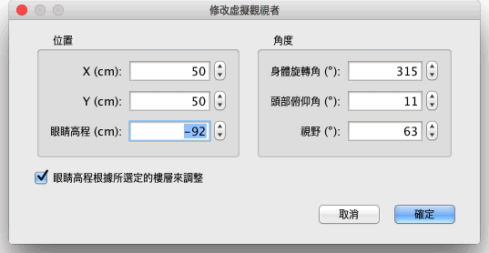

| 自訂 3D 視圖 | |||
您可以選擇 3D 視圖→鳥瞰模式或 3D 視圖→虛擬參觀在兩種 3D 遊覽模式間切換。
當您使用“鳥瞰模式”時，3D 視圖中顯示的是從高處俯瞰家居模型的三維場景。在該模式下按住滑鼠左鍵，左右拖曳滑鼠可使家居模型圍繞其中心處的縱軸旋轉；上下拖曳滑鼠可使家居模型沿著與視圖底部平行的水準軸旋轉；滾動滑鼠滾輪則可縮放 3D 視圖的顯示。 使用“虛擬參觀模式”時，平面圖中會顯示出一個虛擬參觀者，其位置和角度會在您操作 3D 視圖時同步變化。虛擬參觀者的身上共有四個標示符：
|


|
當滑鼠指標位於一個訪問者肩上或在其背上時，它將更改為指示您可以拖動，並將這一點來更改的觀視者，它的身體角或其觀視點海拔的頭部角度。同時按下滑鼠按鈕，工具提示顯示已編輯的值。  此窗選方格還允許更改虛擬觀視者的視野並設置是否應按照當前選定的樓層，使它向上或向下，向所選樓層的虛擬觀視者調整總仰角。 最後，這3D 視圖→修改3D視圖... 功能表項目顯示 3D 視圖窗選方格中，您可以更改地面和天空的顏色或紋理、以及光亮度和牆壁(或地面)的透明度。
|

|